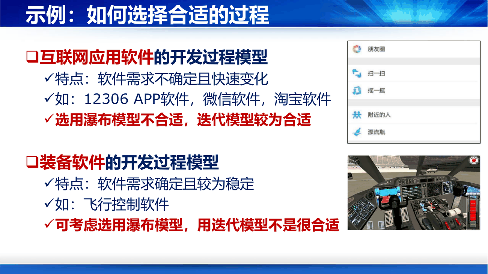
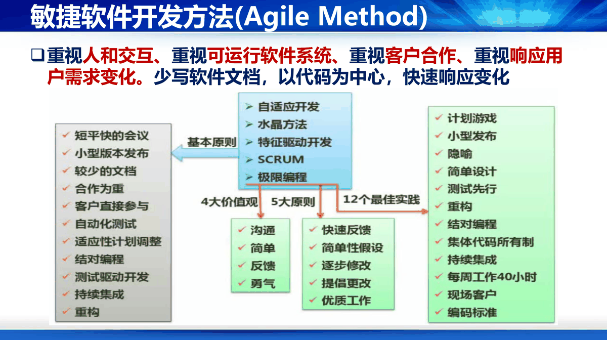

课件第 29 页给了三个考虑维度，缺一不可：
补第 2 条最容易被忽略，但它是现实中最常见的失败原因。 一个五人小团队硬上螺旋模型，结果是每个迭代都要做风险分析、写一堆计划文档，管理开销把开发时间吃光。过程模型的复杂度必须匹配团队的成熟度——这句话在第 2 讲 CMM（能力成熟度模型）那一页背后也是同一个道理。
课件第 30 页给了两个对照案例，很适合当情景题模板：
| 场景 | 特点 | 选择 | 理由 |
|---|---|---|---|
| 互联网应用（12306 APP、微信、淘宝） | 需求不确定且快速变化 | 迭代模型（不宜用瀑布） | 需求一次说不清，必须小步快跑、持续交付 |
| 装备软件（飞行控制软件） | 需求确定且较为稳定 | 瀑布模型（不宜用迭代） | 需求可预先精确定义，且每次交付都要求完整验证 |

补为什么飞控软件"不适合迭代"？ 不只是"需求稳定"，更因为验证成本极高：每次迭代都要重新做完整的安全性、实时性验证，而验证的代价远高于开发。所以这类软件宁可前期把需求钉死，一次做对。这条判断标准可以推广：凡是"验一比改十贵"的软件，倾向于瀑布。
课件第 31 页把五种传统模型（瀑布、增量、迭代、原型、螺旋）放在一起批评，四点：
结论一句话：
以文档为中心的重型软件开发方法，非常笨重。
补"重型/轻量"这个说法值得记住：重型不是"重视文档"，而是"文档成为变更的必经关卡"。改一行代码要走三道文档审批，这就是重型。它的代价在需求稳定时无所谓（反正不改），在需求频繁变化时是致命的——改文档的时间比写代码还长。
重点敏捷开发的概念和观点、敏捷准则、代表方法——《重点内容》3.2 的三项要求，全部落在课件第 32 页同一张图上。
勘误早先这一节只写了一句定义，不是课件只讲了一句，而是那张图的字全部是图片文字，PDF 文本层抓不到。 漏掉的是：中间蓝框的五个代表方法、左侧灰框的 11 条基本原则、底部三个色块（4 大价值观 / 5 大原则 / 12 个最佳实践）。本节按原图重写。

| 传统模型的病灶（PPT 第 31 页） | 敏捷给出的替代（PPT 第 32 页） |
|---|---|
| 大量工作用于撰写文档 | 较少的文档，以代码为中心 |
| 大量时间用于文档评审 | 短平快的会议、结对编程（评审内建在编写过程中）、自动化测试 |
| 需求一变要改一串文档，最后才动代码 | 提倡更改、适应性计划调整、小型发布 |
| 等较长时间才得到可运行软件 | 小型版本发布、持续集成、测试驱动开发 |
补这张表就是"为什么会出现敏捷"的标准答法：敏捷不是凭空提出的新阶段排法，而是对"以文档为中心"的四条代价逐条给了替代品。所以它不规定阶段顺序——阶段怎么排，由各个方法自己定（Scrum 排成冲刺，XP 排成小版本）。
课件原文（第 32 页第一行）：
重视人和交互、重视可运行软件系统、重视客户合作、重视响应用户需求变化。少写软件文档，以代码为中心，快速响应变化。
| 表述 | 含义 | 传统模型的做法 |
|---|---|---|
| 重视人和交互 | 沟通成本才是主要成本，面对面优于文档传递 | 靠文档交接，人一走知识就断 |
| 重视可运行软件 | 用"能不能跑"衡量进度，不用文档完成度衡量 | 用阶段评审、文档里程碑衡量 |
| 重视客户合作 | 客户全程在场，随时答疑与拍板 | 前期签字确认，后期按合同验收 |
| 重视响应用户需求变化 | 变化是常态，欢迎并纳入下一版 | 变更走审批，因为代价高所以倾向拒绝 |
| 少写文档、以代码为中心 | 只写必要文档，让代码与测试承担知识载体 | 文档是变更的必经关卡 |
补这四句其实是《敏捷宣言》四条价值观的压缩版，原文对照如下（课件未列原文，属补充背景）：
| 《敏捷宣言》原文 | 课件对应 |
|---|---|
| 个体和互动 高于 流程和工具 | 重视人和交互 |
| 可工作的软件 高于 详尽的文档 | 重视可运行软件、少写文档 |
| 客户合作 高于 合同谈判 | 重视客户合作 |
| 响应变化 高于 遵循计划 | 重视响应用户需求变化 |
补注意"高于"不等于"不要"。 敏捷不是"不写文档"，而是"当文档和可运行软件冲突时，优先保证软件能跑"。这一点在考试里常被写成"敏捷开发不需要文档"来设陷阱——错。
中间蓝框那五个，就是《重点内容》"代表方法"一项的标准答案范围：
| 方法（提出者 / 年代） | 核心主张 | 一句话记 |
|---|---|---|
| 自适应开发（ASD，Jim Highsmith，2000） | 用"推测—协作—学习"代替"计划—执行"，让组织能自我调整 | 管"适应" |
| 水晶方法（Crystal，Alistair Cockburn，1990s 末） | 按团队人数和出错代价选"颜色"（Clear / Yellow / Orange…），越轻越好 | 管"按项目裁剪" |
| 特征驱动开发（FDD，Jeff De Luca 与 Peter Coad，1997） | 以"特征"为单位建模、计划、追踪，走五步流程 | 管"以特征为单位" |
| Scrum（Ken Schwaber、Jeff Sutherland，1995 前后） | 三角色、三工件、五事件，靠 2–4 周的冲刺小步交付 | 管"流程与节奏" |
| 极限编程（XP，Kent Beck，1999） | 把 12 个工程实践做到"极限"：测试先行、结对编程、持续集成等 | 管"代码怎么写才不烂" |
补答题取巧点：问"敏捷的代表方法"，写 Scrum 与极限编程 最稳（课件原文就列了这两个，现实中也最常用）；能再补上自适应开发、水晶方法、特征驱动开发就答全了五个。注意课件的口径是"方法族"——敏捷不是一种方法，而是一族共享同一套价值观的方法。
补Scrum 与 XP 的分工：Scrum 只管"什么时候做完什么"，不规定代码怎么写；XP 只管"代码怎么写才不腐化"，不管团队怎么开会。所以现实中最常见的落地形态是 Scrum 管节奏 + XP 管工程。
课件左侧灰框的箭头标签写的是「基本原则」。这 11 条是这套方法族在日常工作层面的共同特征：
| 原则 | 具体做法 | 反面（传统做法） |
|---|---|---|
| 短平快的会议 | 每日站会 15 分钟，只同步"做了什么、要做什么、有什么障碍" | 长会、汇报会、层层评审会 |
| 小型版本发布 | 每次发布只加少量功能 | 攒一个大版本一次上线 |
| 较少的文档 | 只写维护必需的那几份 | 每个阶段配一套文档 |
| 合作为重 | 开发与业务方、客户同队工作 | 甲方提需求、乙方交活 |
| 客户直接参与 | 客户代表可随时确认与决策 | 通过需求文档间接沟通 |
| 自动化测试 | 回归靠脚本跑，不靠人点 | 人工回归测试 |
| 适应性计划调整 | 计划随实际进展滚动调整 | 计划一次定死，变更走审批 |
| 结对编程 | 两人一台机，一人写一人审，随时换角色 | 单人开发 + 事后代码评审 |
| 测试驱动开发 | 先写测试，再写让它通过的代码 | 先写代码，最后补测试 |
| 持续集成 | 每天多次合入主干并跑全部测试 | 开发末期集中集成 |
| 重构 | 不改外部行为，持续改善内部结构 | 等结构烂到不可维护再重写 |
补这 11 条与右边"12 个最佳实践"高度重叠，不是两套东西。 课件用两个框分别呈现，是同一件事的两个视角：灰框讲团队怎么工作，绿框讲工程上做哪些实践。
课件底部三条橙线分别标注了这三组，对应下方三个色块。这三块是 XP 的结构，课件把它们当作敏捷的共同骨架来呈现。
4 大价值观
| 价值观 | 含义 |
|---|---|
| 沟通 | 问题尽量在人与人的交流中解决，而不是靠文档 |
| 简单 | 只做当前需要的设计，不为想象中的未来预留 |
| 反馈 | 用测试、发布、客户评审尽早拿到"对不对"的信号 |
| 勇气 | 敢于重构、敢于丢弃过时设计、敢于承认判断错误 |
5 大原则
| 原则 | 含义 | 落到哪个实践 |
|---|---|---|
| 快速反馈 | 从写下一行代码到知道它是否正确，时间越短越好 | 测试先行、持续集成 |
| 简单性假设 | 先假设最简单的方案成立，用事实推翻它 | 简单设计 |
| 逐步修改 | 小步改动、随时可回退，不做大爆炸式重写 | 小型发布、重构 |
| 提倡更改 | 把变更当常态，而不是异常 | 适应性计划调整 |
| 优质工作 | 不靠加班堆工时，靠可持续节奏保持质量 | 每周工作 40 小时 |
12 个最佳实践（简答题的高频采分点，每个都要能说一句"怎么做"）
| 实践 | 具体做法 | 为什么有效 |
|---|---|---|
| 计划游戏 | 客户定范围与优先级，开发估工作量，共同决定下一版内容 | 让"要什么"与"能做多少"当场对齐 |
| 小型发布 | 频繁发布小版本，每次只加少量功能 | 尽早拿到真实反馈，压低单次风险 |
| 隐喻 | 用一两个比喻描述系统整体结构，团队共用一套词汇 | 减少沟通歧义，替代厚重设计文档 |
| 简单设计 | 只实现当前需求，不为想象中的未来设计 | 不为不会发生的需求付成本 |
| 测试先行 | 先写测试用例，再写让它通过的代码 | 需求先被写成可执行的验收标准 |
| 重构 | 不改外部行为，持续改善内部结构 | 防止结构随需求叠加而腐化 |
| 结对编程 | 两人一台机，一人写一人审，随时交换角色 | 评审内建在编写过程中，缺陷当场发现 |
| 集体代码所有制 | 任何人对任何代码都可以修改 | 不留"我的模块"，避免单点依赖 |
| 持续集成 | 每天多次合入主干并跑全部测试 | 集成冲突当天暴露，而不是末期爆炸 |
| 每周工作 40 小时 | 不靠加班堆进度 | 疲劳状态下判断力与代码质量都会下降 |
| 现场客户 | 客户代表常驻团队，随时答疑与拍板 | 需求歧义当天澄清，不必等评审会 |
| 编码标准 | 统一命名、格式、注释约定 | 代码可读、可被任何人接手 |
【易混】两个"四"必须分清：这张图里的「4 大价值观」是 XP 的：沟通、简单、反馈、勇气；而前面那张表里的四条是 《敏捷宣言》的：个体和互动、可工作软件、客户合作、响应变化。两组都叫"价值观"、都是四条，内容完全不同。稳妥写法：先答课件那四条（沟通/简单/反馈/勇气），再补一句"其精神与《敏捷宣言》四组价值观一致"。
| 维度 | 迭代模型（过程模型） | 敏捷（方法族） |
|---|---|---|
| 是什么 | 一种阶段排布方式：整体流程重复多轮 | 一套价值观 + 准则 + 实践，落到方法上才成形 |
| 回答的问题 | 阶段怎么排 | 为什么这么排、团队要怎么工作 |
| 变更 | 在下一轮迭代里安排 | 随时纳入待办列表，欢迎变化 |
| 文档 | 每轮仍按阶段产出文档 | 只写必要文档，代码与测试承担知识载体 |
| 度量 | 阶段完成度、文档评审通过 | 可工作软件、燃尽图 |
| 团队 | 可以有项目经理分层管理 | 自组织团队，客户全程参与 |
补关系是单向的：敏捷一定包含迭代（Scrum 的冲刺、XP 的小型发布都是迭代），但迭代不一定敏捷——一个团队完全可以"每三个月迭代一次，每轮写全套文档、走变更委员会、客户只在验收时出现"，那是迭代模型，不是敏捷。
判断一个团队"敏不敏捷"看三条，不看有没有迭代：
课件只列了 SCRUM 这个词、没有展开。但"代表方法"要答到 5 分，三角色、三工件、五事件是最省力的骨架：
| 类别 | 内容 | 一句话 |
|---|---|---|
| 三角色 | 产品负责人（Product Owner）、Scrum Master、开发团队 | PO 管"做什么"，团队管"怎么做"，SM 管"做得顺" |
| 三工件 | 产品待办列表、冲刺待办列表、增量（Product / Sprint Backlog、Increment） | 待办列表按价值排序，冲刺只取最高优先级的一小段 |
| 五事件 | 冲刺（2–4 周）、冲刺计划会、每日站会（15 分钟）、冲刺评审会、冲刺回顾会 | 前三个管"做完"，后两个管"做对"和"改好" |
补三个最容易答错的点：①Scrum Master 不是项目经理，不分任务、不做考核，职责是移除障碍、保证流程被正确执行；②优先级的决定权在 PO，不在开发团队；③冲刺期间不插入新需求，变更进待办列表、下个冲刺再排。
补两个常用配套：用户故事（作为〈角色〉，我想要〈功能〉，以便〈价值〉；好故事满足 INVEST：独立、可协商、有价值、可估算、够小、可测试）；燃尽图（纵轴剩余工作量、横轴时间，理想线直线下降，实际线在上方说明进度落后）。燃尽图是团队自查工具，不是考核工具——这一点常被答反。
| 适用 | 不适用 |
|---|---|
| 需求不确定或变化快（互联网产品、内部工具） | 需求可精确定义且变更代价极高（飞控、银行核心账务） |
| 能增量交付，每轮都有可验收的价值 | 只能整体交付，中间版本不可用（嵌入式固件、医疗器械注册） |
| 团队小而全、成员资深 | 大团队、跨组织、接口约束强，需要重型接口文档 |
| 客户能全程参与 | 客户无法参与，只能按合同验收 |
| 验证成本低（跑一遍自动化测试即可） | 每次验证都要走安全认证、监管审批 |
补一句话判据：能不能做到每 1–4 周交付一个可运行、可验收的版本。 能，就适合敏捷；做不到（技术上不能增量，或验证成本太高），硬上敏捷只会变成"每两周开一次会、然后继续写全套文档"。
补这把尺子和 3.1 的选型示例是同一把：课件第 30 页说互联网应用"不宜用瀑布、宜用迭代"，可以再进一步——互联网应用不仅宜用迭代，通常还用敏捷（迭代解决"怎么排"，敏捷解决"团队怎么配合"）。反过来，飞控软件"不宜用迭代"，自然也不宜硬套敏捷，理由同一条：验一比改十贵。
补与 DevOps 的区别（第 2 讲把两者并列在"方法"里）：敏捷优化的是"需求 → 可运行软件"这一段，管开发节奏；DevOps 优化的是"提交 → 上线运维"这一段，管交付流水线。两者常一起出现，但不是同一件事，答题别混。
| 误区 | 事实 |
|---|---|
| 敏捷 = 不写文档 | 是"少写、只写有人读的"，维护必需的需求意图、接口约定、设计决策仍要写；准则里没有一条说"不要文档" |
| 敏捷 = 没有计划 | 有计划，只是滚动、粒度短（冲刺计划 + 待办列表排序），而不是"一次排到项目结束" |
| 敏捷 = 加班赶工 | 12 个最佳实践里明确有「每周工作 40 小时」，理由很硬：疲劳状态下写不出可维护的代码，加班换来的速度会在维护期加倍偿还 |
| 敏捷 = Scrum | Scrum 只是最流行的一种框架；XP、水晶、FDD、ASD、看板都属敏捷。把敏捷等同 Scrum，等于把"编程语言"等同 Java |
一句话串起整讲：过程模型规定"先做什么、后做什么、能不能回头、一次做多少"；五种经典模型是同一套阶段的不同排法，选哪个取决于需求有多确定、风险有多大、团队有多强；当需求变化快到文档跟不上时，就以代码为中心、转向敏捷。
核心结论清单
1. 一个团队用增量模型开发一款 App，第一版上线后用户反馈"整体交互逻辑不对，希望推倒重来"。按课件的分析，问题出在哪？
出在增量模型的前提被违反了。增量模型要求"需求可确定且不易于变化"，因为它的概要设计是一次性做完的——架构、模块划分、接口都定了，后面只是分批实现。用户的反馈不是"再加个功能"，而是"方向错了"，这属于需求方向性变化，增量模型无法容纳。正确做法：如果需求本来就不确定，应该在早期用原型把交互逻辑验证掉，或者直接用迭代模型，每轮交付一个"完整但简单"的版本让用户纠正方向。
2. 为什么"带反馈和回溯的瀑布模型"反而可能更糟？
因为它引入了回溯，却没有改变"一次性交付"的本质。回溯让团队可以在后期发现问题时返回修改，但代价是：①项目长期处于"改了又改"的动荡状态，进度不可预测；②仍然要等到所有功能都实现完，才能得到一个可运行的系统，用户在这之前看不到任何东西。也就是说，它用"灵活性"换来了"不确定性"，却没解决"早期无法验证"这个更根本的问题。增量、迭代、原型三种模型都是在解决后一个问题。
3. 判断：某银行核心账务系统需求非常明确、法规约束极严、每次上线都要经过监管审计。应该选迭代模型还是瀑布模型？说明理由。
倾向瀑布（或带阶段性评审的强化瀑布）。理由：①需求确定且稳定，符合瀑布前提；②每次交付都要完整验证（监管审计），迭代会带来多轮审计成本，"验一比改十贵"；③系统的失败代价极高（资金、合规），需要严格的文档与评审链。可以补充：实际操作中常采用"瀑布 + 原型"的混合——用原型澄清界面与流程，用瀑布保证交付的严谨性。
4. 敏捷说"少写文档"，那第 10 讲为什么又说"维护难主要是因为没文档"？这两句矛盾吗？
不矛盾，因为它们约束的对象不同。敏捷反对的是为流程而写的文档（评审用、走流程用、写完没人看），主张用可运行软件和自动化测试承担"知识载体"的功能；第 10 讲说的是维护必需的信息缺失（需求意图、设计决策、接口约定）。敏捷团队的解法通常是用"代码即文档 + 自动化测试用例 + 简洁的必要文档"替代厚重文档集。真正的分界是：这份文档有没有人真的会去读、去维护。 没人读的文档，写与不写都是负债；维护时要用的信息，不写就是灾难。
5. 简答：写出敏捷的代表方法（至少三个），并从 12 个最佳实践中任选五个，说明"测试先行"为什么能提高质量。
代表方法（课件第 32 页列了五个）：自适应开发（ASD）、水晶方法（Crystal）、特征驱动开发（FDD）、Scrum、极限编程（XP）。写出 Scrum 与 XP 各 2 分，再补一个得满。
12 个最佳实践：计划游戏、小型发布、隐喻、简单设计、测试先行、重构、结对编程、集体代码所有制、持续集成、每周工作 40 小时、现场客户、编码标准。
测试先行为什么有效：①需求在写代码之前就被翻译成可执行的验收标准，需求歧义当场暴露，而不是等到验收；②缺陷发现得越早修复越便宜（缺陷成本随阶段指数上升），测试先行使缺陷在"刚写出来"的分钟级时间内被发现；③测试用例成为回归安全网，让重构和持续集成敢于进行；④测试本身是最精确的文档——它不会像设计文档那样与代码脱节。
6. 辨析：某团队采用"迭代模型"，每三个月一个迭代，每轮结束都写全套需求文档与设计文档并通过评审，迭代期间不允许插入新需求，客户只在最后验收时出现。请问这算敏捷吗？
不算，这是迭代模型，不是敏捷。 迭代只回答"阶段怎么排"，敏捷还要回答"团队怎么工作、变更怎么处理、谁来做决定"。按三条判据逐条对照：
可以补一句：迭代是敏捷的必要条件，不是充分条件。 真正的分界在于"变更的成本与决策权"落在谁手里。